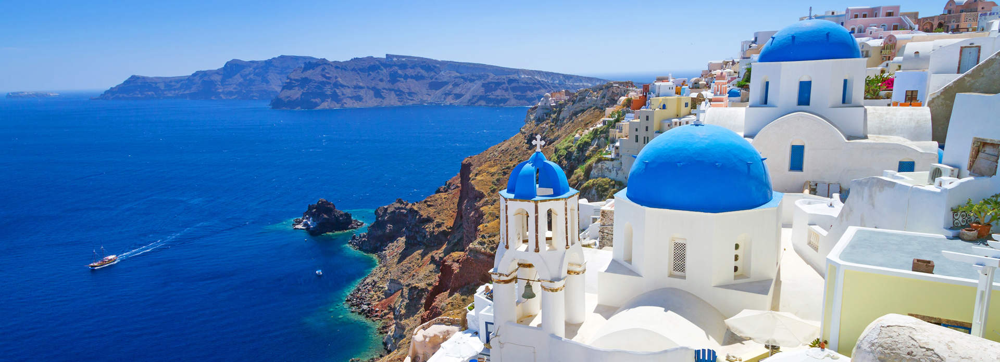

Avaldatud: 5. september 2024
Kreeka on kultuuriline ja ajalooline hiiglane, pakkudes külastajatele võimalust uurida iidseid templeid, kõrbe ja kauneid rannikuäärseid linnu. Siin on mõned huvitavad faktid Kreeka kohta:
Kui plaanite külastada Kreekat, ärge unustage külastada Atika piirkonda, mis on koduks Atika templi ja Parthenoni templi jäänustele. Lisaks on Kreeka saared tõeline paradiis rannapuhkuse armastajatele.
Kategooriad: Reisimine Kreeka
Eelmine postitus: Hispaania reis | Järgmine postitus: USA reis